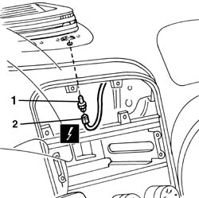
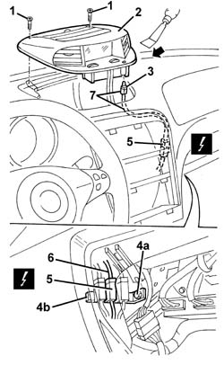

5580E18 anti-theft device w/l - r+r following electrical wiring check
- Path
- Procedures > 55 ELECTRICAL EQUIPMENT > 5580 SPECIAL ACCESSORIES > 5580E anti-theft device > 5580E18 anti-theft device w/l - r+r following electrical wiring check
- Kind
- repair procedure (removal / refitting; the operation number is the code)
- Applies to
- all engines; all production periods
- Interactive page
- https://sloeber94.github.io/elrnDB-a156/en/#/3238542
Applies to: all engines; all production periods
 Removing
Removing
 Refitting
Refitting5040D22 control (one) of air conditioner control support - arrange
2125C24 gear lever knob - r + r
7040A60 under facia trim - r+r
5560C51 combined analogue control panel - r+r or replace
1. Working from inside the facia, prise the led out of its seat.
2. Disconnect the electrical connection and recover the led.
 | Name | Connector |
|---|---|---|
2 | Alarm LED |

Applies to: all engines; all production periods
Refitting
RemovingCheck that the led is undamaged.
Connect the electrical connection to the led.
Test the alarm led to ensure it works properly.
Fit the led into its seat.
5560C51 combined analogue control panel - r+r or replace
7040A60 under facia trim - r+r
2125C24 gear lever knob - r + r
5040D22 control (one) of air conditioner control support - arrange
Applies to: all engines; production: da 03/02 a 09/03, da 10/03
Removing
Refitting7040G24 switch for facia compartment light - r+r
7040G20 facia compartment light bulb holder - r+r
1. Unscrew the bolts
2. Release the centre vent and Infoceter from the housing using the special tool.
 | Name | Country |
|---|---|---|
1 | Scraper blade | 1.823.014.000 |
3. Release the anti-theft device on warning light from the housing.
4. Working in the dashboard compartment, undo the bolt (4a) and extract the support and electrical connections (4b).
5. Disconnect the electrical connections.
| Name | Connector |
|---|---|---|
5 | Alarm LED |
6. Connect a sensor to the end of the anti-theft device on warning light cable (this operation is necessary to faciliate the subsequent fitting of the cable inside the dashboard trim.
7. Extract the warning light, complete with cable, from the dashboard trim, leaving the sensor in its place for the subsequent reinsertion of the actual cable.

Applies to: all engines; production: da 03/02 a 09/03, da 10/03
Refitting
RemovingCheck that the warning light is not damaged.
Using the sensor, fit the warning light cable in place, then remove the sensor.
Connect the electrical connection
Fasten the support and electrical connections in place.
Fit the warning light in the housing.
Engage the centre vent and Infocenter in position.
Tighten the screws.
Topics linked from this page (11)
- 2125C24 gear lever knob - r + r
- 5040D22 control (one) of air conditioner control support - arrange
- 5560C51 combined analogue control panel - r+r or replace
- 5570T80 car radio unit - r+r
- 7040A31 flap assembly - r r
- 7040A60 under facia trim - r+r
- 7040G20 facia compartment light bulb holder - r+r
- 7040G24 switch for facia compartment light - r+r
- 7065C42 ashtray (one) r+r
- E40 Instrument panel
- E40 Alarm LED